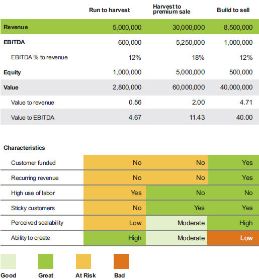

Table 2.1
Examples of run to harvest, harvest to premium sale, and build to sell value plays

Run to Harvest Example
This example is a composite of businesses in the in-home senior care industry, which sends caregivers into homes to help homebound patients with their daily needs. The following are decriptions of the key characteristics:
- Customer funded: No. There is very little opportunity to get paid in advance, so it is not a customer-funded business.
- Recurring revenue: No. While you might argue that the revenue is recurring, the average length of contracts does not support it. A few contracts could last beyond a year, but most fall well short of that time frame.
- High use of labor: Yes. This is a labor-heavy industry that uses low-wage workers and occasionally nurses. The labor turnover can be high, and a lot of caregivers are needed to satisfy the staffing needs.
- Sticky customers: No. Some customers become very attached to a certain caregiver, and that can be good or bad. The customer is sticky to the caregiver, not the company, and if the favored caregiver is not available, the customer might look at your competitors.
- Perceived scalability: Low. Businesses in this industry are grown one case at a time and can get to sustainability within a year, but it is difficult to grow fast, and there tend to be only a few large companies with locations in multiple cities.
- Ability to create: High. There are multiple franchise opportunities, which bring independence, and an owner/ operator can launch with minimal capital and very few regulatory barriers in most areas.
You may look at these characteristics as challenges, but many business owners in this industry have built great businesses that are profitable. In the example shown in table 2.1, this owner would be making $600,000 profit over their market wage of $150,000 to $175,000 per year. At this level of profit, they could easily have access to $300,000 of after-tax cash to invest in other things to build wealth. While the business might not sell for a premium, the owner would still get a decent price for the business, especially if they provide terms to facilitate the transaction in a sale to their management team. (There are pros and cons to that idea!) Given the limited barrier to entry and low up-front capital, this would still be a good business given the economics. To use a baseball analogy, this business will give you enough hits to make the Hall of Fame; you won’t strike out very often, but you won’t win the home run title.